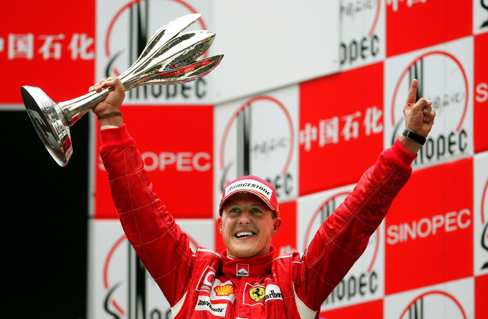
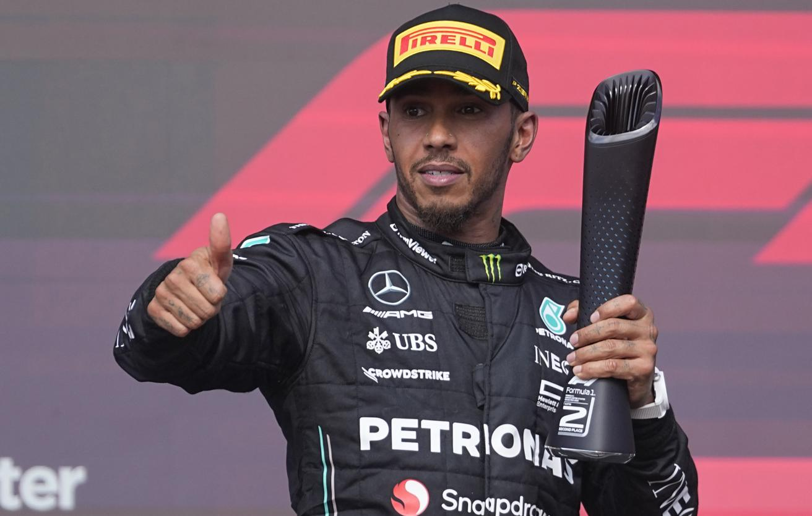
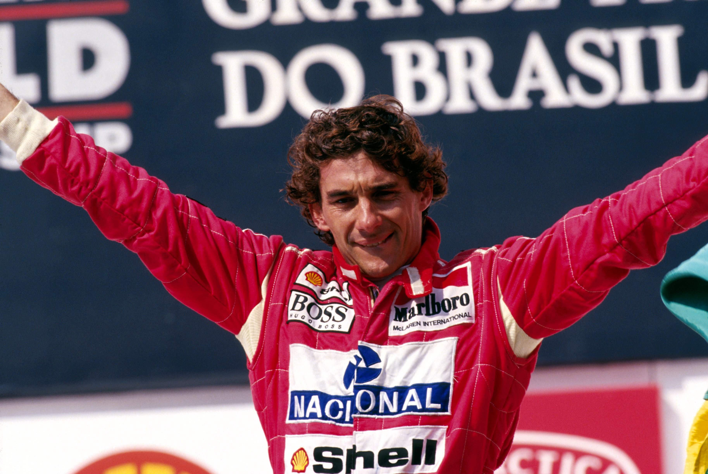
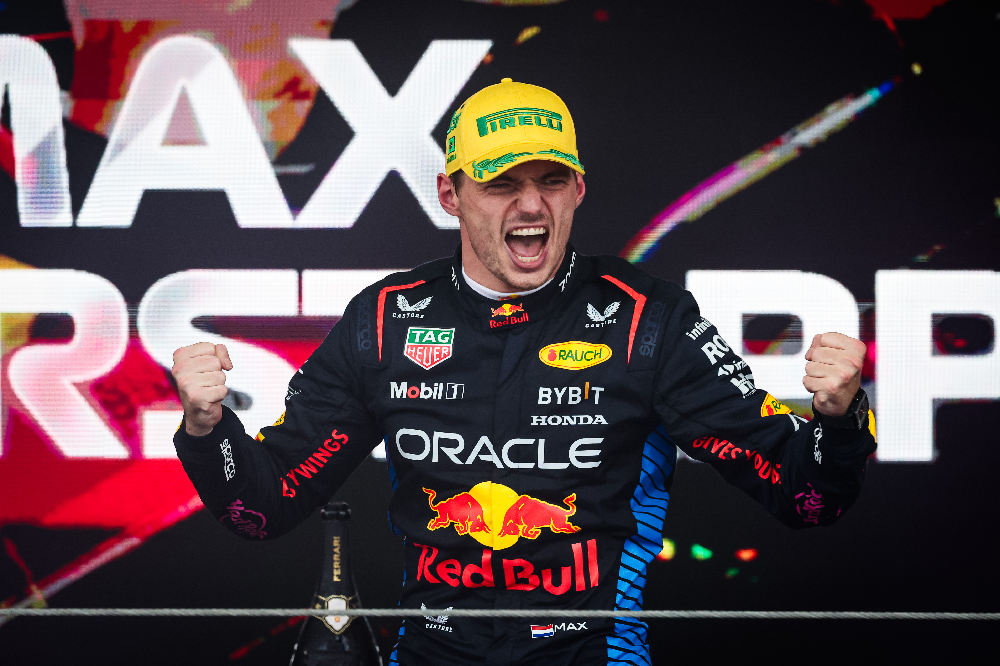
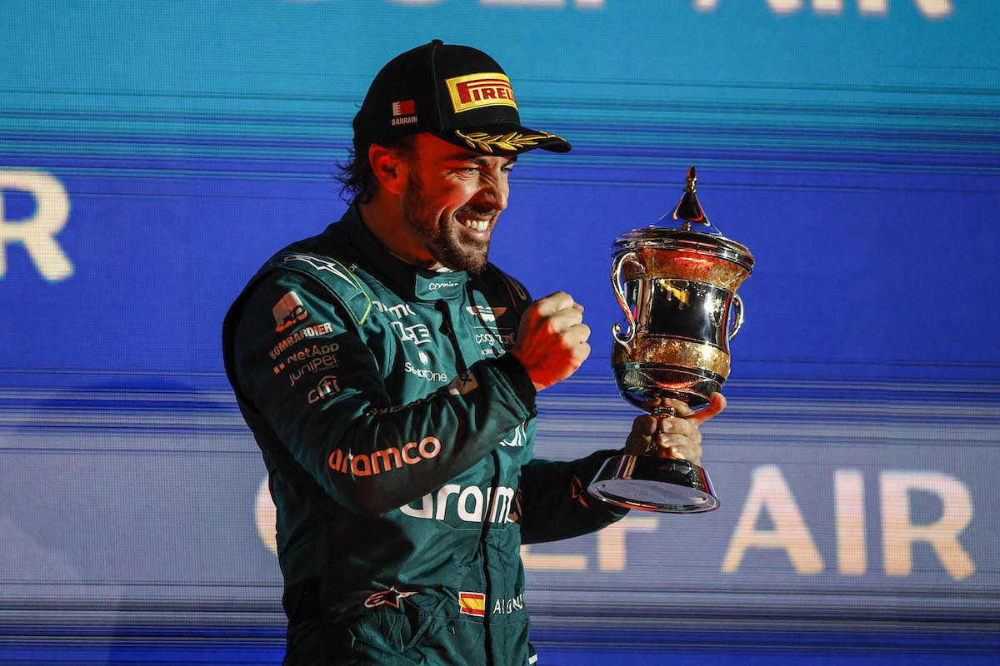
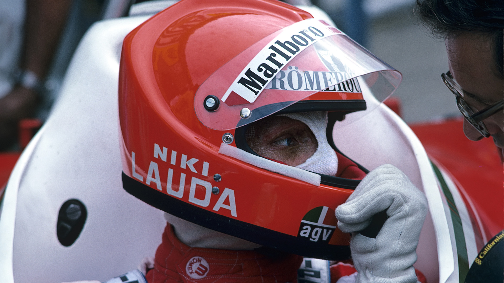

Великие чемпионы
Михаэль Шумахер

Немецкий гонщик, 7-кратный чемпион мира. Долгое время удерживал рекорд по количеству побед (91).
Льюис Хэмилтон

Британский пилот, также 7-кратный чемпион мира. Обладатель рекорда по количеству поул-позиций (104) и побед (105).
Айртон Сенна

Легендарный бразилец, трехкратный чемпион мира, известный своим невероятным талантом и скоростью на мокрой трассе.
Макс Ферстаппен

Самый молодой дебютант в истории. Дебютировал в 2016 году в возрасте 17 лет. На данный момент является 4-кратным чемпионом мира.
Фернандо Алонсо

Выступает в Формуле-1 с 2001 года, дольше чем кто-либо в истории (430 Гран-при). На данный момент является 2-кратным чемпионом мира.
Ники Лауда

Австрийский автогонщик, трёхкратный чемпион мира. Пережил ужасную аварию в 1976 году, когда его машина загорелась, где он получил множественные ожоги 3 степени, после чего вернулся в чемпионат и выиграл еще 2 титула.
Звук эпохи V10
Звук мотора V10 считается многими болельщиками лучшим в истории. Послушайте:
Рекорды чемпионов
- Больше всего титулов: Михаэль Шумахер, Льюис Хэмилтон (7).
- Самый молодой чемпион: Себастьян Феттель (23 года, 134 дня).
- Самый возрастной чемпион: Хуан Мануэль Фанхио (46 лет).
- Больше всего побед за сезон: Макс Ферстаппен (22 победы из 24).